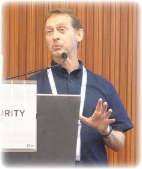

CHERI with a Linux on top
The Capability Hardware Enhanced RISC Instructions (CHERI) project is a rethinking of computer architecture in order to improve system security. Carl Shaw gave a presentation at Linux Security Summit Europe (LSS EU) about CHERI and the efforts to get Linux running on it. He introduced capabilities, which are a mechanism for access control, and outlined their history, which goes back many decades at this point, then looked more specifically at the CHERI project and what it will take to apply the security constraints of capabilities to an operating system like Linux.
Capabilities
At its core, CHERI
is about extending instruction-set architectures (ISAs) to add support for
capabilities. A 1966 paper, "Programming
Semantics for Multiprogrammed Computations", introduced the idea of capabilities, along with
many of the ideas that would later underlie Unix. The paper had a strong
focus on security and ensuring that computations did not interfere with
each other; it generalized some ideas from
earlier computers like Atlas, Rice
Computer, and various Burroughs
machines into what the authors called "capabilities". "Processes need to
own capabilities to be able to do something on a system.
"
A capability is a reference and a set of rights; "a capability is an
access-control object
". It was originally applied to memory, but the paper
expanded the idea to cover I/O and other system resources. For memory, which he
was focusing on for the talk, the reference is to a region of memory and
the rights are permissions to read, write, and execute it.
More formally, "a capability is an unforgeable, transferable token that
authorizes the use of an object
", he said.

An object capability of that sort incorporates both a reference to the object and access rights for that object. The paper used a list of capabilities that a process had access to, which was called the "C-list". Each entry was a capability, with a reference to a memory segment and the permissions for it. So access to memory required an indirection through the C-list table, which turned out not to perform well.
He mentioned a few of the early hardware implementations of capabilities,
starting in 1970, though he said there were some slightly
earlier machines in the US. The CAP computer was from
Cambridge University; the "first ever commercial
capability-based system
" was the Plessey System
250, which was not a general-purpose computer and was originally used
by the military for message routing. It did have many of the attributes of
modern computers, such as virtual memory and symmetric multiprocessing;
"it was a pretty far ahead machine for its day
".
A less-successful capability-based CPU is the Intel iAPX 432 from
1975, which ended up only being used in niche applications. Its
performance was poor, mainly due to the indirection required to access
memory. More recently, the Arm Morello CPU in
2022 was the result of a research project between the company and the UK
government; it added CHERI on top of an Arm
Neoverse processor. It was developed on a short time scale of about a
year, so compromises inevitably had to be made, Shaw said, but "they did
a really good job on it
"; it is still used for research, but newer
CHERI implementations have narrowed their focus to a smaller, more commercially
viable subset of capabilities than the Morello has.
There were a number of operating systems developed using capabilities, "some you've probably never
heard of
", including KeyKOS, EROS, and CapROS, which were mostly "focused around high levels of reliability
".
In modern times, seL4 uses capabilities
and, this year,
it is joined by CHERI-seL4.
But, his talk was aimed at Linux, he said. Linux already has some vestiges of capabilities, including things like socket and file descriptors, which can be passed around to other processes to bestow rights. Kernel capabilities are not true capabilities in his mind, but page-table entries are a form of capabilities: they have a reference to a memory region and associated permissions.
CHERI
"CHERI is a new implementation of capabilities
"; it is a security
technology that is designed to be scalable, so that it can be used in
everything from microcontrollers to server-class hardware. It is
deterministic; CHERI does not rely on any hashing or secrets. "It's
very much a hardware/software co-design technology, as well,
" Shaw said.
Capability-based addressing is used by CHERI, which is a variant without C-lists, so it does not suffer the performance penalties for indirection. CHERI extends existing ISAs. It started by extending MIPS, then Morello extended Arm, and now most of the work being done is for RISC-V; there is also an initial sketch of how the x86 ISA could accommodate CHERI, he said. CHERI takes a hybrid capability approach, so that it can work with existing systems as they are; it accommodates memory-management units (MMUs), hypervisors, and existing programming languages.
The CHERI instructions do not use integer address pointers, they use capabilities for addresses instead. Existing code will still run on a CHERI system, using addresses the way it currently does, but it will not get the benefit of the CHERI protections.
The project was started 15 years ago by Cambridge University and SRI International funded by DARPA. The CHERI Alliance is the focal point of current research, which is being funded by both governments and companies.
The goals of CHERI are to provide memory safety for languages like C
and C++, though it will also benefit others, including Rust, while also
offering "fine-grained, efficient compartmentalization
". There is
already coarse-grained compartmentalization in today's systems, including protection (or
privilege) rings and MMUs protecting processes from each other, but
CHERI is "designed to be very very fine-grained, down to the byte
level, if you wanted to go there
".
The intent was for existing code to run unchanged, "but it never works
like that
". For most well-written C and C++ application code, a
recompile is largely all that is needed to work on a CHERI system. For
example, KDE was ported to CHERI on Morello and only required changes to
0.02% of the code to get it working. For things like language runtimes,
JIT compilers, memory allocators, and code that does lots of pointer
manipulation, such as kernels, it gets more complicated. Beyond Linux, FreeRTOS, Zephyr, and (as mentioned) seL4
have all been ported to run on CHERI hardware; other operating systems are
in progress as well.
The instructions that CHERI adds to the ISA are for creating and modifying capabilities; the modifications are operations that are normally expected for pointers, such as incrementing and other arithmetic operations. The hardware itself needs to be changed to support capabilities; registers need to be extended to hold them, for example.
There is both a pure-capability (purecap) mode, where only capabilities can be used for memory access, and an integer-pointer (integer) mode, which uses regular pointers. There is actually a way to have both in a single program, with pointers annotated based on which type they are, but it is not recommended, Shaw said. On the CPU, there is a mode switch that is made between the two modes, which is particularly important on RISC-V to save space in the ISA encoding; for example, load and store instruction encodings are shared between the modes.
On a CHERI system, all loads and stores are checked against a capability,
even when running in integer mode. There is a program-counter capability
(PCC) for both modes, and a default data capability (DCC) for integer mode,
which allows the accesses from programs in integer mode to be constrained;
"we can set where it can execute and we can set what it can see in
memory
".
In terms of implementation, a capability is an address that has been extended with metadata, but it is important to think of them as a single unit. There is a bounds field, which holds upper and lower bounds for memory addresses, and a permissions field that has the usual read, write, and execute permissions as well as some others, including whether you can store the capability to memory or not. On the CHERI RISC-V, capabilities are 128 bits in size; all of the registers and caches need to accommodate pointers of that size. There is also an out-of-band single bit tag that is used to indicate whether the contents of memory or a register contain a valid capability or not; software generally does not need to interact with the tag directly, he said.
Originally, capabilities were 256 bits so that they could included full
64-bit upper and lower bounds. "One of the innovations of CHERI is to use a
compressed format for bounds
"; the CHERI RISC-V uses a
mantissa-exponent system, which reduces the resolution but that is not much
of a problem on a virtual-memory system, he said.
There are some rules for using capabilities in CHERI, starting with the provenance rule: a capability can only be created using another valid capability. The monotonicity rule says that a new capability can only have the same or lesser rights than the capability it is created from. The reachable capability monotonicity rule disallows increasing the reachable capabilities for a given chunk of code without yielding execution to another domain. The code only has access to a limited set of capabilities, but if it takes an interrupt, that will run in a different domain, which could perhaps increase the capabilities available to it.
When the system boots, it has access to the "infinite cap" (or "root cap"), which is all of the permissions for all of memory; it is generally stored in the PCC. As an example, the system could then create two compartments by creating sub-capabilities that were more restricted; each could have non-overlapping bounds, and one region could perhaps be for code, so it only has read and execute permissions. Then, inside the other region, a read-only array capability could be created; anything having that capability can read the array, but nowhere else in the enclosing region.
Most of the "heavy lifting
" for setting up the capabilities is done
by the compiler, Shaw said. For example, a static C array will have a
capability created for it by the compiler, which is how CHERI can provide
memory safety to C code. The program cannot successfully read or write
outside of the array because the capability it must use to access the array will not allow it to do so. Stacks
can be made non-executable by removing that permission from the capability
for the stack frame, for example.
Linux
CHERI provides run-time memory safety that is hardware-enforced, which is
critical for C and C++ programs. The Linux kernel is mostly implemented in
C so getting memory safety for it requires a tool like CHERI. In addition,
CHERI allows implementing least-privilege
compartmentalization. There have been supply-chain attacks against
libraries, which CHERI could protect against by putting "a
library into a sandbox, mostly automatically, which can constrain its
access and its entry and exit points
". Within the kernel, a similar
approach can be taken by placing subsystems and drivers inside
sandboxes. An analysis
of kernel bugs in 2022 showed that 87% of the high-severity kernel CVEs
could be mitigated with either memory safety or compartmentalization;
"we see that as a pretty important thing to try and achieve
".
About two weeks before his talk in late August, CHERI Linux developers got
the 6.16 kernel running in purecap mode; "so this means that every
pointer in the kernel is now a capability
". Originally, Huawei did a
proof of concept of Linux running on CHERI, then the Morello project ported
Linux to that hardware; the Morello version used the hybrid mode, where
most of the pointers were still integers, though the system-call level used
capabilities.
His employer, Codasip, has a team that is working on Linux for CHERI on
RISC-V; it started with the hybrid Morello kernel, but then did a clean
implementation in purecap mode. "We do not claim it's perfect, what
we're aiming for at the moment is functionality; we want to get the basics
running, then we're gonna go on to the more advanced security
concepts.
" Some of those advanced techniques have already been proved
on FreeBSD in CheriBSD, he said,
but not on Linux yet.
Testing of the kernel has been done using the Linux Test
Project (LTP), which is not all passing, yet, but "it's looking
pretty reasonable
". On the user-space side, there is a "relatively
simple
" purecap version; it does not yet have the GNU C library (glibc)
but is using musl libc. His team is focused on the kernel, core libraries,
and utilities, at this point, he said.
He went through a list of various kernel features, briefly reporting on
their status; many things are working already, including networking, BPF,
USB, and PCIe. There is a "rather dated X11 system working
". The
team has also started some optimization work, especially with regard to
copying memory to and from user space. In addition, the CHERI architecture
allows doing 128-bit loads and stores, which can accelerate functions like memcpy().
There is other development work going on as well, such as on the LLVM compiler for RISC-V CHERI and on QEMU for running and testing the system. The CHERI Alliance GitHub repository is where all of the work is being done.
The ABI being used is the Pure Capability user-space ABI (PCuABI) defined by the Morello project three years ago. It uses capabilities at the system-call level, which constrains what each side of the ABI can do. Copying to and from user-space memory is constrained by the bounds and permissions of the capabilities, while returned capabilities, such as from mmap(), restrict user space.
There are a number of challenges for purecap CHERI in the kernel, starting with the use of unsigned long for pointers. That type is used for pointers all over the kernel, but the CHERI compiler needs them to be a uintptr_t so that it can use capabilities instead. There are also alignment and size problems that come from the larger size of capabilities; structures in the kernel sometimes assume pointers have a specific size. The goal is to minimize the changes that need to be made and to make them with an eye on what can go upstream eventually.
The next piece that his team plans to look at is loading kernel modules
into compartments. It is a tricky problem, since kernel modules "have
to have quite a lot of access within the main kernel
" Another "big
ticket item
" that needs to be tackled is support for BPF in user space.
The BPF compiler has no conception of capabilities, which
needs to be addressed; there is also the question of backward compatibility
for existing BPF binaries. The work done in the CheriBSD project is useful
as a reference, he said.
An area where CHERI could help is with Linux on MMU-less systems. Those
systems lack the process isolation that is provided by the MMU, but CHERI can
provide hardware-enforced isolation. An MMU also provides translation of
addresses to and from virtual and physical, which is not something CHERI
can do, but there is some interesting work in academia that might help.
"CHERI is sort of refreshing some ideas and getting people to look back
at these sorts of issues
", he said.
A related idea is to use CHERI for a single-address-space Linux targeting workloads with many processes sharing the same data. CHERI would be used for isolation, and the MMU for translation, but the shared data would be accessible without changing translation-lookaside buffers (TLBs), so it would reduce TLB thrashing.
Codasip has designed a CHERI CPU, the X730, "from the ground up
"; part of what
the company does is to create configurable cores, where features like CHERI
can be turned on or off when the CPU is built. That makes it easier to
compare performance between the two; performance of CHERI CPUs is a question
that the project frequently gets asked. The X730
only requires less than 5% more silicon area for CHERI, compared to the
A730 non-CHERI version; it can run at the same
maximum frequency for both types. The X730 adds 3.8% overhead for the CHERI
instructions and overall has a less than a 5% performance overhead for CHERI code.
The team is still working on optimizations and thinks it can reduce that
overhead further.
He wrapped up by returning to the paper from 1966, whose authors stressed that "multiprogrammed computer systems" would need to evolve over time to meet changing requirements. That is what the CHERI project is trying to do, Shaw said, by evolving both hardware and software to try to improve the security of computer systems.
Q&A
The first question was in relation to DARPA, which regularly has
initiatives toward memory safety; the most recent is the Translating
all C to Rust (TRACTOR) program, which is looking to automate
that transition. If it is successful, "what role do you see CHERI
playing in an environment where a majority, even a vast majority, of all C
code has been replaced with Rust?
" Shaw said that he wonders how
successful TRACTOR will be, given that AI techniques may fall short of
being able to reliably translate C for all of the different programs needed.
Meanwhile, though, he does not see CHERI and Rust as being in conflict at
all; the two can work together and it is something the project is putting
effort into. "There will be a CHERI Rust compiler.
"
While memory safety is definitely important, the compartmentalization
afforded by CHERI is more interesting to him. "Being able to get least
privilege in software is a real big step forward, I think.
" None of the
current languages attack that problem, he said, so it would take "a
further evolution of language in order to support this whole concept
nicely
".
Another attendee warned Shaw about what Arnd Bergmann said in a talk earlier in the week: the existence of MMU-less Linux is slated to end in 2028 or so. He suggested that Shaw talk to Bergmann about those plans. Shaw said there is a niche for MMU-less CPUs, especially for network gear, such as routers, that is driven by trying to keep the costs as low as possible; ideally, the manufacturers want Linux, but will presumably choose something else if they have to.
The attendee asked about the memory overhead for CHERI, which Shaw said he did not have any real numbers on, since the team has just started gathering that kind of information. The tags add some overhead, but that is typically less than 1% of the size of memory. Pointer-heavy workloads will obviously have a larger increase in memory than computation-oriented workloads, he said.
The compiler being used is LLVM, he said in response to another question; the work there is starting to go upstream and is the first of the CHERI Linux work to do so. The CHERI Linux project has to adapt its strategy for getting code upstream, depending on the target project; LLVM is a large project so the efforts so far have been to get the infrastructure needed for CHERI upstream. Some of that work will show up in LLVM 22, he thinks.
LSS EU organizer Elena Reshetova noted that she agreed that the compartmentalization aspects of CHERI were the more interesting and wondered what progress had been made on that. Shaw said that they are just getting started on compartmentalizing for Linux; the first steps will be for user-space libraries, which are already pretty well understood from the CheriBSD work. Kernel-module compartmentalization is the other thing being pursued, as he mentioned earlier.
He agreed with Reshetova that
compartmentalizing the kernel would be "very challenging
". She
followed up by asking if it even made sense to pursue for Linux;
"given that it never has been considered in the design, this is a pretty
fundamental change
". Shaw thought that it might be possible, at least
based on what the hardware-assisted
kernel compartments (HAKC) project has been doing. "We think it's
at least to some extent achievable.
"
James Morris asked about the relationship between the Morello and CHERI
Linux projects; "are you joining forces to do the upstreaming?
" Shaw
said that "the CHERI community is pretty tight-knit
". His team
works closely with teams for Morello, CHERIoT, and others, including lots of
collaboration with Cambridge University people. The project mostly has
participants in the US and UK, but that is changing and there is more
commercial interest in the project everywhere, he said.
Another question was about how people could emulate CHERI hardware to try things out. Shaw said that there was currently a 6.10 kernel in the CHERI Alliance repository, but that the 6.16 kernel should be pushed there soon. It will come with all of the scripts needed for building everything with Yocto, including development tools, like the toolchain, SDK, QEMU for CHERI, and so on. That will be a good starting point for those wanting to check out CHERI Linux.
The slides and a YouTube video of the talk are available for interested readers.
[I would like to thank the Linux Foundation, LWN's travel sponsor, for
supporting my trip to Amsterdam for Linux Security Summit Europe.]
| Index entries for this article | |
|---|---|
| Kernel | Capabilities |
| Kernel | Security/Security technologies |
| Security | Capabilities |
| Security | Linux kernel |
| Conference | Linux Security Summit Europe/2025 |
Posted Sep 24, 2025 22:32 UTC (Wed)
by notriddle (subscriber, #130608)
[Link] (1 responses)
Rust treats speculative execution as completely out of scope. That, as far as I'm concerned, is its biggest weakness and the main reason you still need hardware isolation.
A quick Google drops me onto at least one paper <https://www.cl.cam.ac.uk/research/security/ctsrd/pdfs/202...> that claims to address speculative execution in CHERI, but I don't know if that's been incorporated into real cores, if it's long obsoleted by more recent innovation, or if I'm completely barking up the wrong tree.
Are CHERI capabilities able to provide SPECTRE-resistant isolation between mutually distrustful privilege domains within a single address space?
Posted Sep 24, 2025 23:02 UTC (Wed)
by wahern (subscriber, #37304)
[Link]
Intrinsically, AFAIU, no. But hardware CHERI support, by requiring both bounds and (to varying extents) provenance information to accompany addresses, potentially makes it easier and more natural to avoid side-channels. And maybe more importantly, CHERI provides an opportunity to nail down ISA guarantees before widespread deployment. See Safe Speculation for CHERI, https://www.cl.cam.ac.uk/research/security/ctsrd/pdfs/202...
Posted Sep 24, 2025 22:49 UTC (Wed)
by wahern (subscriber, #37304)
[Link] (6 responses)
CHERI is great for spatial safety, but the cost of avoiding indirection means temporal safety requires more work. Perhaps the next evolution will be exploring how linear or affine typing in application languages such as Rust could be leveraged to minimize the sweeping work, e.g. by automatically clearing capabilities as they're copied through the application from malloc through free. Or evolving allocation APIs and page table permission schemes so memory that doesn't need to store a capability/pointer can be skipped from sweeping entirely.
[1] https://www.cl.cam.ac.uk/research/security/ctsrd/pdfs/202...
Posted Sep 26, 2025 0:29 UTC (Fri)
by cpatulea (guest, #87498)
[Link] (1 responses)
Any chance you might have a deeper reference for this?
Posted Sep 26, 2025 12:24 UTC (Fri)
by wahern (subscriber, #37304)
[Link]
Also worthwhile to read the core papers on CHERI, especially papers about and subsequent to the ARM Morello implementation. Once you understand the basic architecture, in particular the hidden 129th bit that tags a word (i.e. C pointer) in memory as a valid capability and which is copied along with the visible 128-bit value (e.g. in `char *b = *a;`), it's easy to see understand the problem space regarding revocation. Most of the early work in CHERI was finding and verifying the minimum software and hardware requirements for guaranteed spatial safety that was also maximally performant in hardware and practical to incorporate into existing platforms (language standards, ABIs, kernels, etc). Temporal safety, especially performant revocation, didn't receive as much attention until later, after the shape of capability pointers (i.e. 129-bit compressed pointers) had already largely been settled. But it's still an active area of research and may yet result in some design changes or at least suggest additional hardware facilities for future implementations.
Posted Sep 27, 2025 23:15 UTC (Sat)
by NYKevin (subscriber, #129325)
[Link]
1. Every "regular" capability is really a double indirection (a pointer-to-a-pointer) in disguise. I will use the term "outer pointer" to refer to the first layer of indirection (exposed to user code) and "inner pointer" to refer to the second layer (the pointee of the outer pointer).
I know that double indirection is significantly more expensive than single indirection... but sweeping address space not only seems like it should be similarly expensive, it gets slower the more memory we allocate (whereas double indirection is a fixed cost per dereference). How much memory do you have to allocate before you hit the break-even point?
The other obvious question is how much of this you can hardware-accelerate, and to what extent.
Posted Oct 2, 2025 13:03 UTC (Thu)
by Vorpal (guest, #136011)
[Link] (2 responses)
Oof, that seems like a complete deal breaker to me. My main interests are in low latency hard realtime code, and that would completely kill any RT guarantees.
I don't see it scaling well to large workloads either. Imagine a database server with hundreds of GB of memory mapped into the process, no way that you want to sweep through all the pointers in that either. And even if you do it in the background concurrently, you will eat a lot of memory bandwidth, and you risk falling behind.
Which means we are left with a small niche: small systems with no RT guarantees.
> during the pendency of a concurrent background sweep, a CoW-like scheme temporarily traps all reads to sweep specific pages on demand, permitting forward progress before the concurrent sweep completes.
Isn't there a race condition in that: if you copy the capability around you may be able to copy it from a yet-to-be-swept page to an already swept page while the sweep is somewhere in between those pages? Or maybe I'm misunderstanding you.
Posted Oct 2, 2025 17:19 UTC (Thu)
by Wol (subscriber, #4433)
[Link] (1 responses)
Then you're using the wrong database server :-)
Cheers,
Posted Oct 2, 2025 17:25 UTC (Thu)
by jake (editor, #205)
[Link]
Please do not continue down this path, Wol. You have been asked before. Your favorite hobby horse is off-topic on this article (and many, many others).
thanks,
jake
Posted Sep 25, 2025 6:30 UTC (Thu)
by chmaynard (subscriber, #125652)
[Link]
From the Amazon.com summary:
"The book describes early descriptor architectures and explains the Burroughs B5000, Rice University Computer, and Basic Language Machine. The text also focuses on early capability architectures. Dennis and Van Horn's Supervisor; CAL-TSS System; MIT PDP-1 Timesharing System; and Chicago Magic Number Machine are discussed. The book then describes Plessey System 250, Cambridge CAP Computer, and Hydra System. The selection also discusses STAROS System and IBM System/38 ... The book highlights Intel iAPX 432, and then considers segment and objects, program execution, storage resources, and abstraction support."
Posted Sep 25, 2025 12:34 UTC (Thu)
by kevinlyles (subscriber, #77866)
[Link]
Posted Oct 6, 2025 11:06 UTC (Mon)
by erithax (guest, #179705)
[Link] (1 responses)
> ""what role do you see CHERI playing in an environment where a majority, even a vast majority, of all C code has been replaced with Rust?"" Shaw said that he wonders how successful TRACTOR will be, given that AI techniques may fall short of being able to reliably translate C for all of the different programs needed. Meanwhile, though, he does not see CHERI and Rust as being in conflict at all; the two can work together and it is something the project is putting effort into. ""There will be a CHERI Rust compiler.""
This answer does not clear up much. My guess is it would only improve the safety of `unsafe` Rust, like running in Miri does, but with much less performance degradation than Miri, enabling its use in production. While that is a nice safety improvement, we should then weigh whatever performance penalty CHERI has against the small amount of unsafe operations that it protects.
> While memory safety is definitely important, the compartmentalization afforded by CHERI is more interesting to him. ""Being able to get least privilege in software is a real big step forward, I think."" None of the current languages attack that problem, he said, so it would take ""a further evolution of language in order to support this whole concept nicely"".
I would agree that the non-memory-safety aspects of capability-based security are as important. However, although language support for capabilities should definitely improve, just about every language contains the groundworks of capabilities through encapsulated objects and parameter passing. Additionally, language support is not required for stronger use of capabilities in an OS: see Redox OS.
Also, unlike CHERI, Rust can afford memory safety on all existing hardware, awaiting rustc_codegen_gcc support for exotic platforms, which, mind you, probably won't support CHERI.
Posted Oct 6, 2025 19:28 UTC (Mon)
by tialaramex (subscriber, #21167)
[Link]
All the safe Rust of course is in the first category, but also isn't reaping much benefit from CHERI.
core::ptr::without_provenance(addr) and core::ptr::with_exposed_provenance(addr) are largely text, one of them says we offer no justification for why this can be a pointer (maybe it isn't, if we never dereference it then it's fine even in CHERI AFAIU) the other offers the justification of exposure, a feature CHERI does not support, so it's effectively documenting why it won't work with CHERI.
On the other hand some_pointer.with_addr(addr) promises to work under CHERI because we're saying if we keep the CHERI capability bits from some_pointer, but use the address addr instead of the address from some_pointer that's also a valid pointer. On my x86-64 there are no capability bits, but on CHERI there are and on both this works _if_ it would be correct to do this, MIRI can check it, and CHERI can use it.
Spectre mitigation overhead
Spectre mitigation overhead
Capability Revocation and Indirection
Capability Revocation and Indirection
Capability Revocation and Indirection
Capability Revocation and Indirection
2. When an allocation is created, we create an inner pointer for it. When an allocation is deallocated, we mark its inner pointer as invalid.
3. Inner pointers live in a special region of address space. When it fills up with dead pointers, you unmap the whole region, and map a fresh one somewhere else. The region is not allowed to contain any object other than an inner pointer (no "real" allocations).
4. A region that has ever been mapped for inner pointers during the lifetime of a process can never again be remapped to contain inner pointers (but it can be remapped for any other purpose, so this is not a pervasive restriction and should not break anything else). malloc or its equivalent would be responsible for the necessary bookkeeping, which might involve mapping regions at some fixed or regular pattern of offsets to reduce the amount of data that you need to track.
5. When an outer pointer is dereferenced by user code, you first check the validity of the outer pointer, then check that it points to a region currently mapped for inner pointers, and finally check the validity of the inner pointer.
6. In principle, you could run out of address space doing this, but that ought to take a rather long time if we're using 64-bit addresses. If we really insist on reusing inner pointer regions, one option could be to give each mapping and each outer pointer a generation number, but CHERI pointers are already wider than standard pointers, and I'm not sure this is worth it. Besides, then you're just running out of generation numbers instead.
Capability Revocation and Indirection
Capability Revocation and Indirection
Wol
Capability Revocation and Indirection
Capability-Based Computer Systems
Fantastic title!
CHERI plus/versus Rust
Lastly, I think there's a reason that patching fluid software to fix mistakes in fixed hardware is the norm, and not the other way around. What does CHERI address that could not be fixed in software?
CHERI plus/versus Rust